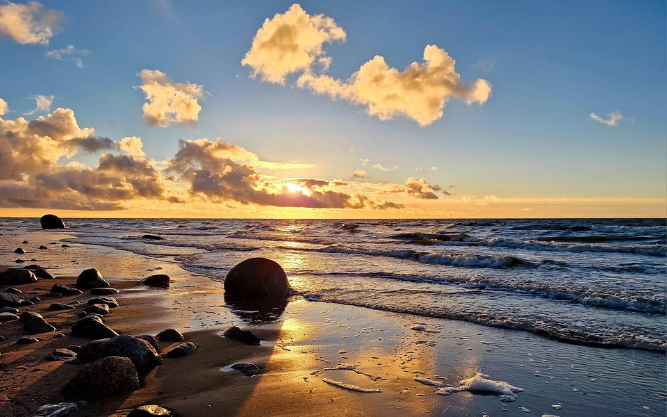

Presentación
Buenas, soy Cynthia Gallego Oncala, tengo 17 años, estoy estudiando 2º de bachillerato en el IES Kursaal. Lo que más me gusta:
- Playa

- Animales
- Viajar
- Nadar
- Además una de mis pasiones es la Semana Santa, que es una celebración católica, a continución propongo un enlace a una explicación de este culto:
semanasantabycynthi